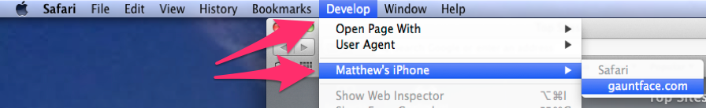

Developing on Devices
Use Real Devices
When it comes to developing on a real device, there are a few things to point out and some tips to bear in mind.
When it comes to developing on a real device, there are a few things to point out and some tips to bear in mind.
TL;DR
One of the simplest ways to test on a real device, is to simply find the IP address of your computer, run your web server and then point your mobile devices to your computer’s IP address.
Every OS has a different way of finding out your IP address. If you spot the network panel on your computer, that will be the easiest way to find your local IP address.
OS X and Ubuntu users can always run ifconfig from the terminal; Windows
users can run ipconfig from the command prompt.
It’s often easier and more flexible to test your site using Chromes Port Forwarding feature. This shares localhost sites from your computer, to your phone over USB.
The first step is to enable USB debugging on your Android device. Go to Settings > About Phone and tap the Build number seven times. Then return back to the Settings screen and select Developer Options.
In Developer Options, make sure the USB debugging is checked.
Check your site running locally. In this example we have a server running on port 3000, so the URL is http://localhost:3000/:
Open a new tab in Chrome and type in the URL chrome://inspect and plug your
phone in over USB.

Clicking on the Port Forwarding button will allow you to enter the port your
server is on as well as a localhost port on your phone.

Make sure the ‘Enable port forwarding’ checkbox at the bottom of the popup is checked. Press ‘Done’ and you’ll be able to open http://localhost:3000 on your mobile device and see your site.
Each browser/platform has its own way to debug sites. Use the appropriate DevTools to help debug problems.
You can use Chrome DevTools with Chrome for Android by setting up your device
for development and then visiting chrome://inspect. Check out our Chrome
docs on how to set
all of this up.

To debug Safari for iOS, follow these steps:
Develop and, look for your devices name.
Unfortunately there is no way to debug a site on Windows Phone, but you can
emulate a mobile browser on the desktop version of IE
11.
We’ll cover this in the next article.
If you have a large number of devices to test against, you may find it overwhelming to do a basic test across all of the devices. Browser Sync can help with this by synchronising interactions across all of your devices. This includes scrolling, clicking and form entry.
BrowserSync is enabled out of the box with Web Starter Kit, so try it out there or check out the gulp file for how to integrate it in your own workflow.
If you aren’t using Gulp, head on over to the BrowserSync site for alternative approaches to using it.
Updated on 2014-09-25
Except as otherwise noted, the content of this page is licensed under the Creative Commons Attribution 3.0 License, and code samples are licensed under the Apache 2.0 License. For details, see our Site Policies.